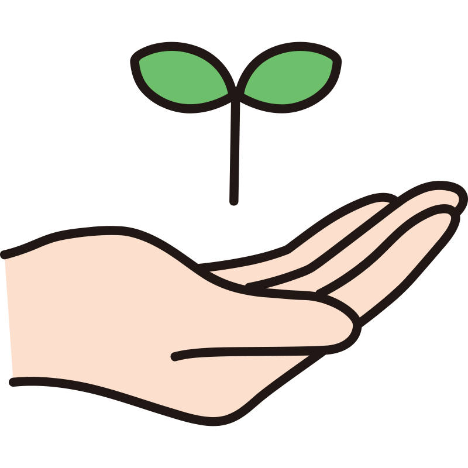

Science 2. #
#
Interstellar Dust Grains, Ices & Planet Formation
Welcome 👋
You have just set foot on my accademic websites portefolio. They are the product of an innovative note taking method resulting in a free and creative way to share science while giving it an interactive and collaborative dimension.
Hope you enjoy !—Vince (Creator, editor)
Project Goals
Online scientific publication and public engagement plateform, 
Self-own, creative, independant, interactive and lifelong, 
Aimed at promoting collaboration between multi-disciplinary scientistist, 
By providing the space and the tools To create and sustain an open and constructive dialogue
5 websites


Current State
 - Experiment    Â
- Experiment      - Work in progress    Â
- Work in progress      - a Journey    Â
- a Journey      - Participative    Â
- Participative      - Online Free Book
- Online Free Book
Master

Science By & For People#
New tools and methods
to perform, edit, publish, share and discuss Research 📖
Manifesto
Why !
Guides
How !
Roadmap
When !
Contribute
w/ Who ?
Free & Open Source
Not free of effort though 💪
Jupyter Book
This web-site have been built from a collection of markdown files, transformed in html using:
Accessible to everyone.
Open
Free
Easy to use
How I use this book 🙃
Notebook
Edition
Storage
Open Science
Communication
Collaboration
Publications
Engagement
Management
Social media
 How You can use it
Who are you
Interact
Collaborate
Review
Comment
Discuss
Chat
Want your own accademic web-site?
Get in touch!
Help
And if you are an expert in any of those topics, feel free to come and help me too
I can Help 😉
Open Science Tools
Markdown
Executable Books
Jupyter Book
MyST
Anaconda
Github
Binder
Semantic Web
Research#
My Scientific Projects
Stairway to Heaven
Experimenting with the earliest stages of planet formation (Part 2)
Job Type: PhD
Lead supervisor: Anita Dawes
Discipline: Astrochemistry
Duration: 4.5 years
Status:
→

👀 → 
Museum of non result
Experimenting with the earliest stages of planet formation (Part 1)
Job Type: PhD
Lead supervisor: Helen Fraser
Discipline: Astrophysics / Engeneering / Material Sciences
Duration: 4.5 years
Status:
→

👀 → 
First steps
Photochemistry of Fe:H2O adducts in argon matrixes: a combined experimental and theoretical study in the mid-ir and uv-visible regions
Job Type: Internship
Lead supervisor: Jennifer Noble
Discipline: Astrochemistry
Duration: 2 month
Status: Finished (✅)
 -
-
Collaborative
Tools to interact with the page
Interact
Interact and play with the code
Annotate
Annotate every word in this web-site.
 Hypothesis
Hypothesis
Reproduce
Github, Figshare
Code and data repositories.
 Github / Figshare
Github / Figshare
Comment
Utterances (needs login - Github account) is a space at the bottom of each page for more relax comments.
 Utterance
Utterance
Chat / Forum
Futur
Peer-Review 
Every word I am writing is to be reviewed, questionned, challenged … Help yourself with all the aformentionned tools and if you are not sure about how to use it, check the following page:
Help/Tools
Colaborate
I would like to welcome as many contributions as possible from a wide variety of researchers to explain the basics of their disciplines (in a completely free and creative fashion).
Discuss 
Process the data using my online tools …
All we need to create and sustain an ...
Open Dialogue ğŸ˜
Teaching#
Cutting Edge Science
From multiple disciplines


{kind=link}
{kind=link}
Fun and Creative
Organised by Topics
Astronomy
Astronomy 101
Different difficulty levels (🟢 - 🟡 - 🔴 - 🟣)
Continuous integration & improvement from real feedbacks
Inputs from multiple and diverse scientific actors
3 Formats
Lifelong implementation
Bitesize 
Small lessons to introduce specific topics that I encounter during my research journey. Overview of the various concepts relative to a scientific topics.
Practicle 
Some practical tutorials which will accompanied you in producing some material.
Cours particuliers 

Let's go ?

Comments#
Notes
Page
Author: Vincent Deguin;
Status: ✅ 🔎
Reviewed: ❌
Updated: 28/05/2023
or